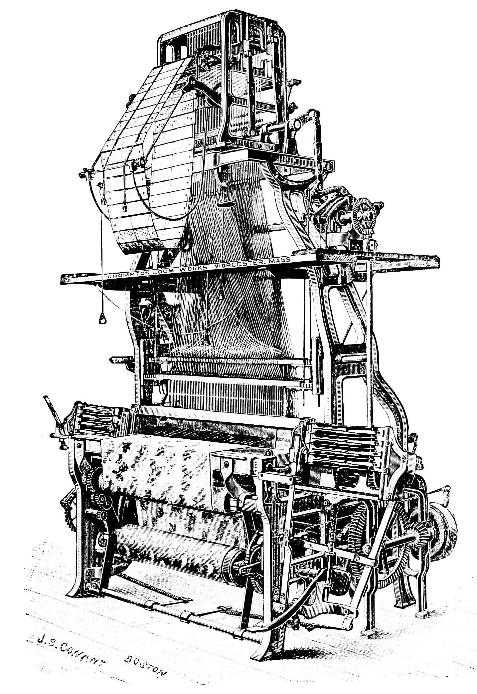
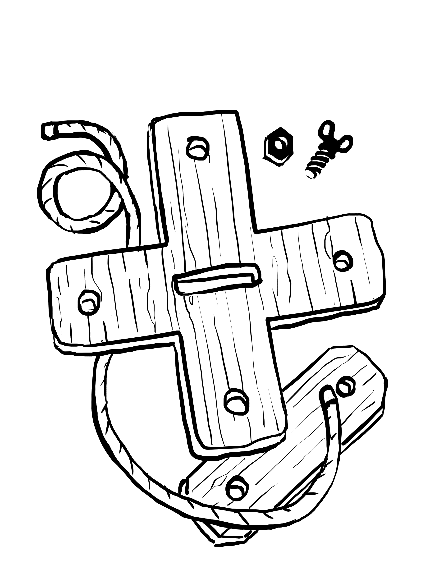

Un graphiste déguisé en développeur déguisé en designer
J'ai travaillé en tant que :
maquettiste (exécutant)
designer graphique
illustrateur
développeur (grâce à cette formation)
J'ai la conviction que comprendre et pratiquer la technique en profondeur
m'aide à tenir des positions plus solides sur la conception.
Graphisme print
Subir des outils
⬇
Développement créatif
Fabriquer des outils
Ce qui m'intéresse
Les outils et la création
Aujourd'hui, les outils et la technique sont indissociables de la création.
L'automatisation
L'action de remplacer partiellement ou complètement
un humain par un dispositif (appareil) dans l'accomplissement d'une tâche.
Si le remplacement est partiel et qu'une personne "pilote" l'exécution
de cette tâche, on peut parler d'outil.
Une anecdote à propos de l'automatisation
Les métiers à tisser Jacquard

L'origine du mot « sabotage »
L'apparition du design
Les métiers du design sont issus de la révolution industrielle.
Ils sont par essence liés aux problèmatiques de l'outil et de la production, et se situent à la croisée entre la création (au sens artistique)
et la résolution de problème (répondre à un besoin).
Être critique sur son propre travail
« We focus so much on what we can do, that we forgot to ask
ourselves what we should and shouldn't do.
But in the end, the
monsters that we unleash into the world will be named after us. »
Citation du talk de Mike Monteiro How Designers Destroyed the World
Le problème
En entreprise, on voit principalement les outils
sous l'angle de la productivité,
même dans les processus créatifs.
Dans ce mémoire j'essaye d'analyser pourquoi et également de répondre à la question :
Comment peut-on changer la manière
dont nous pensons les outils pour les métiers créatifs,
et comment en faire de meilleurs ?
Quels outils ?
Pour les métiers créatifs
Les métiers où l'individu utilise ses connaissances, son expérience, sa sensibilité, ses savoir-faire,
sa vision, son jugement et des obets techniques pour créer un contenu original et/ou pertinent.
Des exemples plus concrets que je garderai en tête :
pour les graphistes
pour les journalistes
Des outils numériques
Services
Frameworks
Plugins & Libraries
Toolkits (boîtes à outils)
Open-source / closed-source
Avec des interfaces graphiques ou abstraites (type API)
Qui n'utilisent pas de Machine Learning ou d'IA de manière élaborée,
car c'est le processus de création/design au sens humain du terme qui m'intéresse.
Inclus dans un workflow ou une chaîne de production, comme :
des journalistes travaillant avec des graphistes et des développeurs pour faire des data-visualizations
des designers travaillant avec des développeurs et des technical artists four faire des jeux vidéo
Des designers graphiques et UX travaillant avec des développeurs pour faire des applications
Pourquoi aime-t-on les outils au travail ?
Pour la productivité
Gagner du temps
Simplifier le processus
Utiliser de larges quantités de données/contenu
Être prolifique
Pour un meilleur contrôle
Plus de prévisibilité (cadrer)
Gestion de projet
Limiter les erreurs humaines
Des outils pour la productivité uniquement :
les revers
Contrôler en cloisonnant : le silotage
Le paradigme fonctionnel
La fracture sociale ou "dis-sociation"
L'illusion du contrôle
Les erreurs cachées
"human-in-the-loop"
Les services comme outils
Un travail standardisé et appauvri
Perte de valeur
Travail aliénant (micro-work)
Perte des savoir-faires
Perte de sens
Des pistes pour de meilleurs outils
pour les métiers créatifs
Chercher des mots pour décrire de nouveaux paradigmes
Pour décrire l'action de créer
Le "craft"
La "praxis"
Pour qualifier les outils
Un "hypomnéma"
Un "pharmakon"
Viser des workflow dynamiques
Éviter le waterfall et le remplacer par de l'itération
Activer la sérendipité
Favoriser les discussions transdisciplinaires
Se soucier et prendre soin de ses utilisateurs
Les inclure dans le processus de design (de leur outil)
Réaffirmer la valeur des personnes et métiers créatifs
Leur laisser embrasser la complexité
Rendre son outil accessible
Les boucles de feedback courtes (et explicites)
Créer une documentation et des tutoriels de qualité
Construire une communauté autour de l'outil
Rendre son outil facile à réparer/maintenir
Étude de cas :
Le concept : des blocks
Des types d'utilisateurs variés
L'avis d'un data journaliste
Viser la composabilité plutôt que la configurabilité
En conclusion
Une meilleure compréhension des outils et des dynamiques les entourant
peut aider les décisionnaires et les designers à trouver de la valeur
dans d'autres choses que la productivité pure.
Comprendre son outil pour pouvoir le déconstruire, ajuster, réparer
Ne devrait pas être uniquement le rôle d'un organe spécialisé et cloisonné
Il faut aider nos utilisateurs à s'élever et s'émanciper
Le monde se transforme et il faut que nos paradigmes, nos habitudes et nos outils changent également.
Nous devons retirer la productivité du cœur de nos préoccupations, et y mettre la pertinence à la place.
Ceux qui peuvent se doivent de trouver et d'exprimer de nouveaux buts, même - et surtout - en entreprise.
Making Tools For Creative People

Ce que je n'ai pas creusé:
La taille des structures, la spécialisation,
Avec un léger recul, je me rends compte que ce mémoire critique davantage
la chaîne de production en elle-même plutôt que les outils qu'elle met en place.
Je reste malgré tout persuadé que c'est une approche viable - concrête et pratique -
que de s'attarder sur les outils.